My Role
To lead user research and define user experiences, visual design (branding) and light experiences for workers. I conducted user trials to test new light authoring concepts and tools and communicated ideas in design documents and presentations for the client. The app is currently installed in Chicago. The success of the project has led to more work and user tool development.
Molex Tool Suite
My Role for the Molex Tool Suite
I Led the design team to deliver revolutionary tools for commissioning, testing, management and control of office lighting. I defined user experience and brand guidelines for each tool and ensured consistency in the package. I also worked closely with the technical director and engineers to ensure the technology platform worked with the design and behaviour of the Molex product.
Tools and Technologies
Pen and Paper, Adobe Illustrator, Adobe Photoshop, Adobe Indesign, amBX authoring tools.
App Icon
Color Pallette


 

Fonts
Verdana
Arial